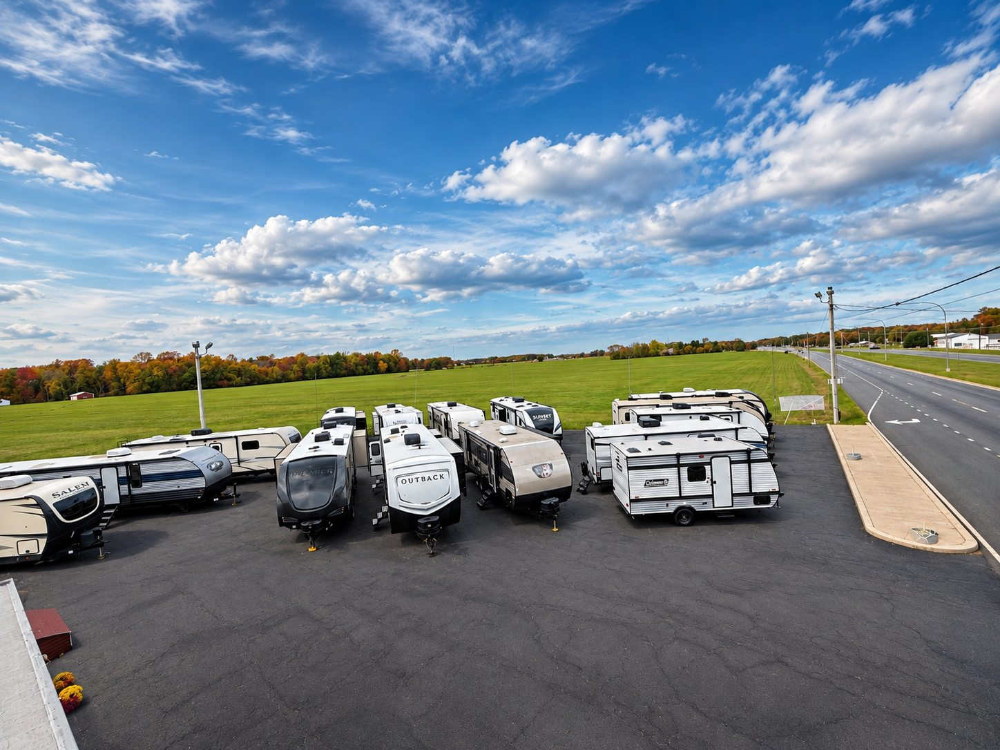
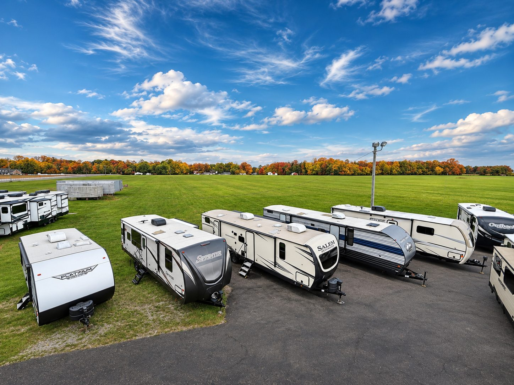
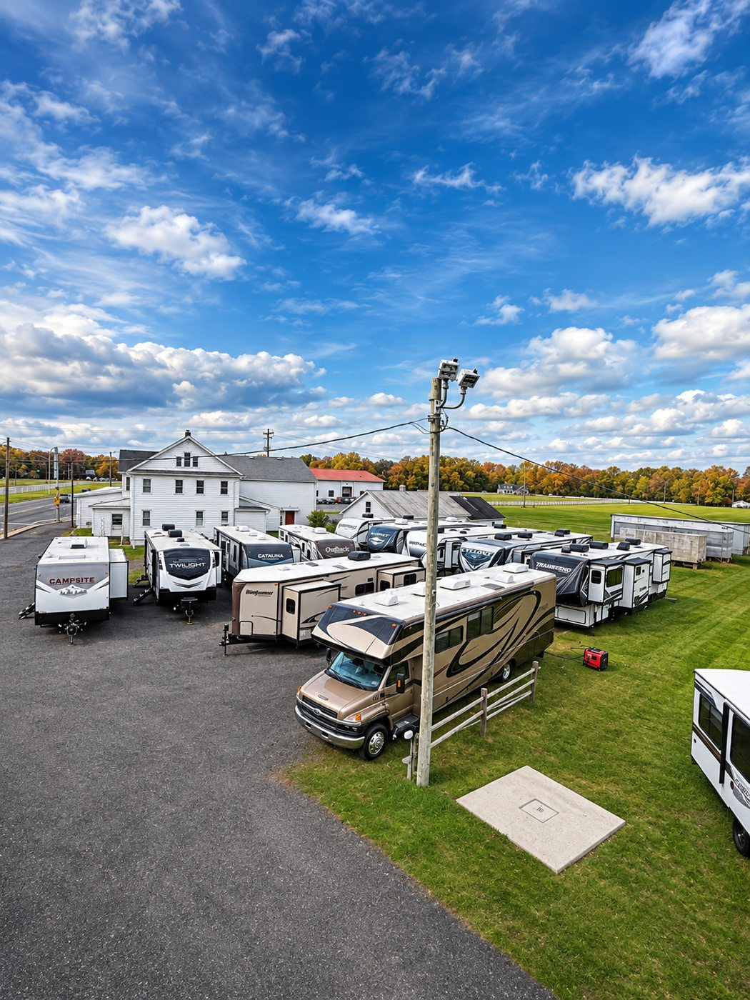

No surprise dealer fees
We don't add hidden freight, prep or dealer fees to the advertised camper price. State taxes, registration and title costs depend on your location.
Our focus is simple: buy carefully, price aggressively, be straightforward about the unit and make it easy for customers to buy.
We routinely compare our inventory against other dealers so our pricing stays competitive.
Bring us your existing camper and we’ll evaluate it toward your purchase.
Qualified buyers can apply through our secure financing portal.
We can help get the right camper to your home or campsite.
Take a look around our Felton dealership. We focus on quality pre-owned campers, straightforward prices, and making the shopping experience comfortable from start to finish.



We believe buying an RV should be simple. You deserve a fair advertised price, straight answers and time to make the decision that's right for you.
We don't add hidden freight, prep or dealer fees to the advertised camper price. State taxes, registration and title costs depend on your location.
Browse and compare at your pace. Our team is here to help, not push.
Financing and optional coverage are explained clearly, without a drawn-out upsell.
We work to make every purchase worth recommending to friends and family.